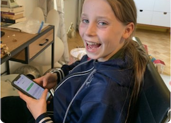

-
Sluit goed aan bij haar lesboeken
We zijn fan van WRTS. Anne is 14 jaar en gebruikt de oefentoetsen en uitlegvideo’s voor Frans, biologie en wiskunde. Ik maakte me eerst zorgen of het allemaal wel goed aansloot bij haar lesboeken maar dat doet het zeker. Laatst kwam Anne zelfs thuis met een 8 voor bio!

–
Marlies, Hoorn
Hogere cijfers voor
Duits
Maak oefenvragen of oefentoetsen, bekijk uitlegvideo’s, leer woordjes gratis en chat met tutoren.
Gratis registerenWat zeggen onze fans
4.3
591 reviews